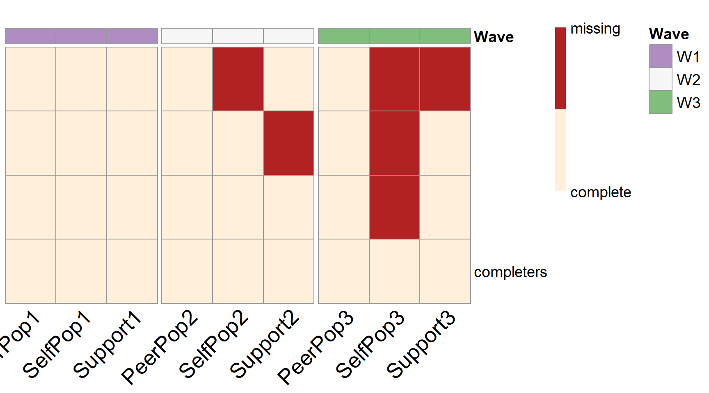

Forward-Assembly-PHPM.RmdIn this vignette we will discuss how to use simPM to search for item-level PHPM designs via forward assembly. Similar with balanced item-level PHPM designs, the missingness is imposed at the item(or observed variable) level. But unlike the balanced designs, the number of missing observed measurements is not equal across all the missing data patterns. For example, some participants may be missing only one observed measurement in the remaining waves, while some participants may be assigned to miss four observed measurement in the remaining waves.
In simPM, the forward assembly methods will build up the PHPM design sequentially. It will start by searching for the optimal missing data pattern with only one missing observed measurement. Given the optimal pattern with only one missing indicator, it continues to build the design by adding another pattern with two missing observed measurements, after which it continue to add another missing data pattern with three missing observed measurements…At each step, it looks for the optimal missing data pattern that would yield the best statistical power, in combination with the previously selected missing data patterns.
Compared to balanced item-level PHPM designs, the designs returned by forward assembly will have much fewer number of unique missing data patterns and thus make it easier for implementation in practice.
To implement forward assembly using simPM, we need to specify the methods = "forward" argument when using the simPM() function. Additionally, we also need to specify the maximum number of unique missing data patterns we would wish to have in the PHPM design using the max.mk argument.
In this hypothetical example, a researcher (Mr. Y) is interested in studying the longitudinal trajectories of children’s externalizing behaviors. The researcher proposed to collect reports from the mother, the father, and the teacher about the child’s daily behaviors (from families with hetero-sexual parents). Once the data collection is completed, the researcher intends to model the externalizing behaviors as a latent variable and investigate its change over time.
Suppose the researcher has proposed a complete-case longitudinal study to collect data for 1,135 children across four waves, each collected at grades 1, 3, 4, and 5. The proposed analysis model is shown below, where the three indicators of the latent construct (externalizing behavior) \(\eta\) across each of the four waves are the responses from the mother (M1-M4), the father (F1-F4), and the teacher (T1-T4), correspondingly.
Although the researcher has initially obtained an external funding to support his longitudinal study, unfortunately, after the first wave of data collection, the funding agency announces a 30% reduction in the remaining funding. Mr. Y wishes to continue the project but he has to deal with the lowered budget constraint. Of course, Mr. Y also wants to keep the scientific rigor and satisfactory statistical power. He thus chooses to use simPM to find a design that yields sufficient power but costs no more than the reduced budget.
A second-order linear LGM
After supplying the population model and the analysis model, we can use the simPM() function to search for an optimal item-level missing design with the methods = "forward" argument. For this example, suppose we wish to have no more than five unique missing data patterns in the PHPM design. For more details about the specification of other arguments, please refer to this vignette.
popModel='
EXB1=~1.150*F1+0.836*T1+1*M1
EXB2=~1.150*F2+0.836*T2+1*M2
EXB3=~1.150*F3+0.836*T3+1*M3
EXB4=~1.150*F4+0.836*T4+1*M4
interc=~1*EXB1+1*EXB2+1*EXB3+1*EXB4
slope=~0*EXB1+2*EXB2+3*EXB3+4*EXB4
interc~~-0.244*slope
interc~8.289*1
slope~-0.433*1
interc~~18.184*interc
slope~~0.249*slope
EXB1~~1.084*EXB1
EXB2~~1.777*EXB2
EXB3~~1.457*EXB3
EXB4~~1.700*EXB4
T1~-0.214*1
T2~-0.214*1
T3~-0.214*1
T4~-0.214*1
M1~0*1
M2~0*1
M3~0*1
M4~0*1
F1~-1.136*1
F2~-1.136*1
F3~-1.136*1
F4~-1.136*1
M1~~23.886*M1
F1~~17.737*F1
T1~~55.074*T1
M2~~20.223*M2
F2~~8.941*F2
T2~~66.698*T2
M3~~16.905*M3
F3~~13.922*F3
T3~~61.995*T3
M4~~19.324*M4
F4~~13.410*F4
T4~~71.127*T4
F1~~4.256*F2+7.040*F3+5.737*F4
F2~~5.440*F3+3.590*F4
F3~~6.165*F4
T1~~23.603*T2+24.666*T3+23.168*T4
T2~~35.213*T3+29.648*T4
T3~~33.815*T4
M1~~12.975*M2+11.153*M3+11.683*M4
M2~~12.219*M3+11.332*M4
M3~~11.807*M4
'analyzeModel='
EXB1=~NA*F1+a*F1+b*T1+1*M1
EXB2=~NA*F2+a*F2+b*T2+1*M2
EXB3=~NA*F3+a*F3+b*T3+1*M3
EXB4=~NA*F4+a*F4+b*T4+1*M4
interc=~1*EXB1+1*EXB2+1*EXB3+1*EXB4
slope=~0*EXB1+2*EXB2+3*EXB3+4*EXB4
interc~~slope
interc~1
slope~1
interc~~interc
slope~~slope
EXB1~~EXB1
EXB2~~EXB2
EXB3~~EXB3
EXB4~~EXB4
F1~c*1
F2~c*1
F3~c*1
F4~c*1
T1~d*1
T2~d*1
T3~d*1
T4~d*1
M1~0*1
M2~0*1
M3~0*1
M4~0*1
F1~~F1
F2~~F2
F3~~F3
F4~~F4
T1~~T1
T2~~T2
T3~~T3
T4~~T4
M1~~M1
M2~~M2
M3~~M3
M4~~M4
F1~~F2+F3+F4
F2~~F3+F4
F3~~F4
T1~~T2+T3+T4
T2~~T3+T4
T3~~T4
M1~~M2+M3+M4
M2~~M3+M4
M3~~M4
'forward.ex2 <- simPM(
analyzeModel = analyzeModel,
popModel = popModel,
VarNAMES = c("F1","T1","M1","F2","T2","M2",
"F3","T3","M3","F4","T4","M4"),
distal.var = NULL,
n = 1135,
nreps = 1000,
seed = 123321,
Time = 4,
k = 3,
Time.complete = 1,
costmx = c(rep(5,3),rep(10,3),rep(15,3)),
pc = 0.05,
pd = 0,
focal.param = c("interc~1",
"slope~1",
"interc~~interc",
"slope~~slope"),
max.mk = 5, #maximum number of unique missing data patterns allowed in the design
eval.budget = T,
rm.budget = 1135*(15+30+45)*0.7,
complete.var = "M3", #assume the researcher wants to collect complete data from the mothers at wave 3
engine = "l",
methods = "forward" #type of PHPM designs under consideration, "forward" indicates imbalanced item-level PM designs searched via forward assembly.
)In this example, given that we have specified to collect complete data for the mother’s report at wave 3, we thus have:
The program will run Monte Carlo simulations in order to assemble the optimal PHPM design. With the max.mk = 5 argument, the target PHPM design will have five unique missing data patterns, each has \(1, 2, ..., 5\) missing observed measurements, respectively.
According to the output, the optimal design costs $30,000, which is below the reduced available budget. From the output, we can see that 10% of the participants are assigned to provide complete data across all the future waves of data collection. The rest 90% of the participants are randomly assigned to one of the three unique missing data patterns (\(n=300\) in each pattern).
Over 1000 replications, this design yields an empirical power of 0.786 for testing the path coefficient \(b_{PS_1}\), 0.721 for testing the path coefficient \(b_{PS_2}\), 0.917 for testing the path coefficient \(b_{TS_1}\), and 0.890 for testing the path coefficient \(b_{TS_2}\).
summary(forward.ex2)
#> [1] "=================results summary================"
#> convergence.rate weakest.param.name weakest.para.power cost.design
#> 14 0.913 slope~~slope 0.922 70880.75
#> 15 0.912 slope~~slope 0.896 70880.75
#> 16 0.908 slope~~slope 0.921 70880.75
#> 17 0.921 slope~~slope 0.930 70880.75
#> 18 0.920 slope~~slope 0.918 70880.75
#> 19 0.913 slope~~slope 0.931 70880.75
#> 20 0.919 slope~~slope 0.913 69802.50
#> 24 0.910 slope~~slope 0.907 70880.75
#> 25 0.909 slope~~slope 0.896 70880.75
#> 26 0.907 slope~~slope 0.912 70880.75
#> 27 0.917 slope~~slope 0.914 70880.75
#> 28 0.914 slope~~slope 0.899 70880.75
#> 29 0.914 slope~~slope 0.912 70880.75
#> 30 0.915 slope~~slope 0.897 69802.50
#> 31 0.909 slope~~slope 0.924 69802.50
#> 32 0.908 slope~~slope 0.905 69802.50
#> 33 0.908 slope~~slope 0.929 69802.50
#> 34 0.909 slope~~slope 0.903 68724.25
#> 35 0.918 slope~~slope 0.918 68724.25
#> 39 0.910 slope~~slope 0.914 70880.75
#> 40 0.915 slope~~slope 0.902 70880.75
#> 41 0.922 slope~~slope 0.929 70880.75
#> 42 0.911 slope~~slope 0.921 70880.75
#> 43 0.914 slope~~slope 0.907 70880.75
#> 44 0.918 slope~~slope 0.928 70880.75
#> 45 0.918 slope~~slope 0.910 69802.50
#> 46 0.920 slope~~slope 0.930 69802.50
#> 47 0.923 slope~~slope 0.920 69802.50
#> 48 0.930 slope~~slope 0.940 69802.50
#> 49 0.921 slope~~slope 0.916 68724.25
#> 50 0.922 slope~~slope 0.925 68724.25
#> 51 0.920 slope~~slope 0.918 69802.50
#> 52 0.924 slope~~slope 0.906 69802.50
#> 53 0.924 slope~~slope 0.927 69802.50
#> 54 0.922 slope~~slope 0.906 68724.25
#> 55 0.922 slope~~slope 0.907 68724.25
#> 56 0.925 slope~~slope 0.919 67646.00
#> miss.num miss.var1 miss.var2 miss.var3 miss.var4 miss.var5 sim.seq
#> 14 5 F2 T2 F3 F4 T4 14
#> 15 5 F2 T2 F3 F4 M4 15
#> 16 5 F2 T2 F3 T4 M4 16
#> 17 5 F2 T2 T3 F4 T4 17
#> 18 5 F2 T2 T3 F4 M4 18
#> 19 5 F2 T2 T3 T4 M4 19
#> 20 5 F2 T2 F4 T4 M4 20
#> 24 5 F2 M2 F3 F4 T4 24
#> 25 5 F2 M2 F3 F4 M4 25
#> 26 5 F2 M2 F3 T4 M4 26
#> 27 5 F2 M2 T3 F4 T4 27
#> 28 5 F2 M2 T3 F4 M4 28
#> 29 5 F2 M2 T3 T4 M4 29
#> 30 5 F2 M2 F4 T4 M4 30
#> 31 5 F2 F3 T3 F4 T4 31
#> 32 5 F2 F3 T3 F4 M4 32
#> 33 5 F2 F3 T3 T4 M4 33
#> 34 5 F2 F3 F4 T4 M4 34
#> 35 5 F2 T3 F4 T4 M4 35
#> 39 5 T2 M2 F3 F4 T4 39
#> 40 5 T2 M2 F3 F4 M4 40
#> 41 5 T2 M2 F3 T4 M4 41
#> 42 5 T2 M2 T3 F4 T4 42
#> 43 5 T2 M2 T3 F4 M4 43
#> 44 5 T2 M2 T3 T4 M4 44
#> 45 5 T2 M2 F4 T4 M4 45
#> 46 5 T2 F3 T3 F4 T4 46
#> 47 5 T2 F3 T3 F4 M4 47
#> 48 5 T2 F3 T3 T4 M4 48
#> 49 5 T2 F3 F4 T4 M4 49
#> 50 5 T2 T3 F4 T4 M4 50
#> 51 5 M2 F3 T3 F4 T4 51
#> 52 5 M2 F3 T3 F4 M4 52
#> 53 5 M2 F3 T3 T4 M4 53
#> 54 5 M2 F3 F4 T4 M4 54
#> 55 5 M2 T3 F4 T4 M4 55
#> 56 5 F3 T3 F4 T4 M4 56
#> miss.loc1 miss.loc2 miss.loc3 miss.loc4 miss.loc5
#> 14 4 5 7 10 11
#> 15 4 5 7 10 12
#> 16 4 5 7 11 12
#> 17 4 5 8 10 11
#> 18 4 5 8 10 12
#> 19 4 5 8 11 12
#> 20 4 5 10 11 12
#> 24 4 6 7 10 11
#> 25 4 6 7 10 12
#> 26 4 6 7 11 12
#> 27 4 6 8 10 11
#> 28 4 6 8 10 12
#> 29 4 6 8 11 12
#> 30 4 6 10 11 12
#> 31 4 7 8 10 11
#> 32 4 7 8 10 12
#> 33 4 7 8 11 12
#> 34 4 7 10 11 12
#> 35 4 8 10 11 12
#> 39 5 6 7 10 11
#> 40 5 6 7 10 12
#> 41 5 6 7 11 12
#> 42 5 6 8 10 11
#> 43 5 6 8 10 12
#> 44 5 6 8 11 12
#> 45 5 6 10 11 12
#> 46 5 7 8 10 11
#> 47 5 7 8 10 12
#> 48 5 7 8 11 12
#> 49 5 7 10 11 12
#> 50 5 8 10 11 12
#> 51 6 7 8 10 11
#> 52 6 7 8 10 12
#> 53 6 7 8 11 12
#> 54 6 7 10 11 12
#> 55 6 8 10 11 12
#> 56 7 8 10 11 12
#> [1] "=================Optimal design================="
#> convergence.rate weakest.param.name weakest.para.power cost.design
#> 48 0.93 slope~~slope 0.94 69802.5
#> miss.num miss.var1 miss.var2 miss.var3 miss.var4 miss.var5 sim.seq
#> 48 5 T2 F3 T3 T4 M4 48
#> miss.loc1 miss.loc2 miss.loc3 miss.loc4 miss.loc5
#> 48 5 7 8 11 12
#> [1] "=================Optimal design for focal parameters================="
#> Estimate Average Estimate SD Average SE Power (Not equal 0)
#> interc~1 8.2865724 0.18423599 0.18257516 1.00
#> slope~1 -0.4329607 0.03256262 0.03172940 1.00
#> interc~~interc 18.2731813 1.68107536 1.66210528 1.00
#> slope~~slope 0.2502644 0.07226992 0.07443478 0.94
#> Std Est Std Est SD Std Ave SE Average FMI1 SD FMI1
#> interc~1 1.9443858 9.325732e-02 0.09379636 0.02365522 0.006379778
#> slope~1 -0.9003786 2.070116e-01 0.18404313 0.10842323 0.019047938
#> interc~~interc 1.0000000 1.554693e-16 0.00000000 0.11784586 0.021024875
#> slope~~slope 1.0000000 1.438019e-16 0.00000000 0.27518386 0.024379875
#> [1] "=================Optimal patterns==============="
#> F1 T1 M1 F2 T2 M2 F3 T3 M3 F4 T4 M4
#> 0 0 0 0 1 0 1 1 0 0 1 1
#> 0 0 0 0 1 1 1 0 0 0 1 0
#> 0 0 0 0 0 1 1 0 0 0 0 1
#> 0 0 0 0 0 1 0 0 0 0 1 0
#> 0 0 0 0 0 0 0 1 0 0 0 0
#> completers 0 0 0 0 0 0 0 0 0 0 0 0
#> [1] "=================Optimal probs=================="
#> [1] 0.19 0.19 0.19 0.19 0.19 0.05
#> [1] "=================Optimal ns===================="
#> [1] 215 215 215 215 215 60